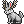
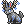

Дистанція Огляду
Розберемо які речі, класи та зброя впливають на дистанцію огляду (ДО).
Дистанція огляду є фіксованою і при вдяганні зброї в обидві руки бонуси огляду не урізаються.
На даний момент максимальна ДО в грі складає - 1671 м.
Класи
В деяких класів є пасивні вміння, що збільшують дистанцію огляду на 20%
Т5 Majestic (Величний)
Крім пасивного вміння ДО, має ще можливість носити обладунки будь якого типу, тому на цьому класі можна розвинути найбільшу дистанцію огляду.
Т7 Majistrate (Магістрат)
Т8 Arcanic (Арканик)
Т10 Realmshifter (Вивертвимір)
Т10 Зоряний клас Realmshifter Dorado (Вивертвимір Златориб)
Може носити обладунки розбійників і воїнів, тому теж може розвинути максимальну ДО.
Специалізація
Т5 Seeker (Шукач)
Дає не більше, не менше, а саме 20% до ДО. Ніяких інших бонусів немає, тому підходить тільки для розвідки світу.
Тимчасові бафи
Brazier (Сигнальний щобйомубулонеладно Вогонь)
Баф в замку, діє 1 годину. Можна запустити раз в 24 години. Дає +20% ДО
Torch (Факел)
Дає +20% ДО
Farsight (Закрайгляд)
Дає +20% ДО
Обладунки
 Т10 Fallen Sky Hood (Відлога занепалих небес)
Т10 Fallen Sky Hood (Відлога занепалих небес)
Дає +10% ДО. Має 7 слоти на ГФ.
Т10 Fallen Sky Helmet (Шолом занепалих небес)
Дає +10% ДО. Має 7 слоти на ГФ.
Т10 Argos (Аргос)
Дає +20% ДО. Має 8 слотів на ГФ.
Зброя
Т2 Draconian Archistaff (Архіпосох драконійця)
Дає +20% ДО.
Т4 Firepike (Вогняна піка)
Дає +23% ДО. Має 6 слотів на ГФ. Можуть носити всі класи.
Т5 Candle-pike (Свічкоспис)
Дає +20% ДО. Має 6 слотів на ГФ.
Т5 Candle-staff (Свічкопосох)
Дає +20% ДО. Має 6 слотів на ГФ.
Т5 Surtr's Sword (Меч Сурта)
Дає +20% ДО. Має 8 слотів на ГФ. Можуть носити всі класи.
Т5 Helhest (Громак Гель)
Дає +20% ДО. Має 8 слотів на ГФ.
Т5 Gazing Staff (Посох погляду)
Дає +20% ДО. Має 6 слотів на ГФ.
Т5 Menja's Warstaff (Бойовий посох Менії)
Дає +20% ДО. Має 8 слотів на ГФ. Можуть носити всі класи.
Т6 Fey Gazing Staff (Посох лихого погляду)
Дає +20% ДО. Має 6 слотів на ГФ.
Т7 Ascalon (Аскалон)
Дає +20% ДО. Має 7 слотів на ГФ.
Т7 Ra's Cane (Тростина Ра)
Дає +20% ДО. Має 6 слотів на ГФ.
Т7 Arisen Draconian Archistaff (Архіпосох повсталого драконійця)
Дає +20% ДО. Має 6 слотів на ГФ.
Т10 Arisen Gazing Staff (Споглядаючий посох повсталого)
Дає +20% ДО. Має 6 слотів на ГФ.
Т10 Arisen Menja's Warstaff (Бойовий посох повсталої Менії)
Дає +20% ДО. Має 8 слотів на ГФ. Можуть носити всі класи.
Т10 Arisen Surtr's Sword (Меч повсталого Сурта)
Дає +20% ДО. Має 8 слотів на ГФ. Можуть носити всі класи.
Т10 Fey Surtr's Sword (Меч лихого Сурта)
Дає +20% ДО. Має 8 слотів на ГФ. Можуть носити всі класи.
Т10 Arisen Helhest (Громак повсталої Гель)
Дає +20% ДО. Має 9 слотів на ГФ.
Т10 Fey Helhest (Громак лихої Гель)
Дає +20% ДО. Має 9 слотів на ГФ.
Офф-хенд
Т4 Everlasting Torch (Довічний смолоскип)
Дає +20% ДО. Можуть носити всі класи.
Т9 Mammon's Sword (Меч Маммона)
Дає +20% ДО. Має 3 слоти на ГФ. Можуть носити всі класи.
Т5 North Star (Полярна зірка)
Дає +20% ДО. Можуть носити всі класи.
Т9 Ebon North Star (Ебенова полярна зірка)
Дає +20% ДО. Можуть носити всі класи.
Т10 Arisen North Star (Полярна зірка повсталого)
Дає +20% ДО. Можуть носити всі класи.
Аксесуари
Т3 Lantern (Ліхтарик)
Дає +20% ДО. Можуть носити всі класи.
Т5 Lasting Lantern (Довговічний ліхтарик)
Дає +20% ДО. Можуть носити всі класи.
Т8 Midnight Eye (Опівнічне око)
Дає +20% ДО. Можуть носити всі класи.
Т10 Unfelled Concord (Клейнод Нескорених)
Дає +20% ДО. Можуть носити всі класи.
Камінці в зброю
Т9 Symbol of War (Символ війни)
Дає +2% ДО.
Т6 All-seer's Gem (Камінь всебачучого)
Дає +1% ДО.
Спомин
Спомин
Дає від 3 до 5 % ДО залежно від якості.
Тваринки
Вальхалла класи можуть отримувати бонуси 1, 2 і 3 рівнів бондів. Всі бонуси від кожного рівня додаються.
Т2 Evil Eye (Зле око)
Бонд 1 лвл +5% ДО.
Бонд 2 лвл +5% ДО.
Т4 Gazer (Око)
Бонд 1 лвл +5% ДО.
Бонд 2 лвл +5% ДО.
Т6 Fey Gazer (Лихе око)
Бонд 1 лвл +5% ДО.
Бонд 2 лвл +5% ДО.
Т8 Great Gazer (Велике око)
Бонд 1 лвл +5% ДО.
Бонд 2 лвл +5% ДО.
Т8 Steward Gazer (Око-соратник)
Бонд 1 лвл +5% ДО.
Бонд 2 лвл +5% ДО.
Т9 Crimson Gazer (Багряне око)
Бонд 1 лвл +5% ДО.
Бонд 2 лвл +5% ДО.
Т10 Asteria of Olympia (Астерія)
Бонд 1 лвл +2% ДО.
Т10 Atlas of Olympia (Атлас)
Бонд 1 лвл +2% ДО.
Т10 Ophion of Olympia (Офіон)
Бонд 1 лвл +2% ДО.
 Т2 Wolpertinger (Кролень)
Т2 Wolpertinger (Кролень)
Бонд 1 лвл +2% ДО.
Бонд 2 лвл +2% ДО.
Бонд 3 лвл +2% ДО.
 Т4 Travelled Wolpertinger (Дужий кролень)
Бонд 1 лвл +2% ДО.
Бонд 2 лвл +2% ДО.
Бонд 3 лвл +2% ДО.
 Т7 Experienced Wolpertinger (Вмілий кролень)
Бонд 1 лвл +2% ДО.
Бонд 2 лвл +2% ДО.
Бонд 3 лвл +2% ДО.
 Т10 Worldly Wolpertinger (Мудрий
кролень)
Т10 Worldly Wolpertinger (Мудрий
кролень)
Бонд 1 лвл +2% ДО.
Бонд 2 лвл +2% ДО.
Бонд 3 лвл +2% ДО.